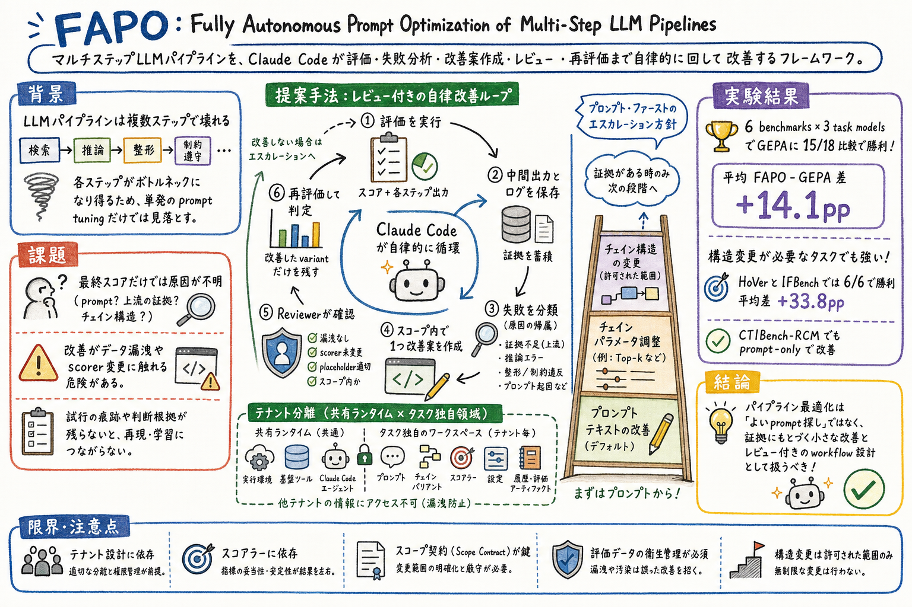

1
まず、multi-step LLM pipeline は検索、推論、整形、制約遵守など複数箇所で壊れると置く。
Reading artifact
この論文は、multi-step LLM pipeline の改善を、prompt 文言探しではなく、評価、失敗帰属、スコープ内変更、独立レビュー、再評価を回す自律的な改善 workflow として扱う。

まず、multi-step LLM pipeline は検索、推論、整形、制約遵守など複数箇所で壊れると置く。
次に、最終スコアだけでは原因が分からないため、中間出力とログを artifact として保存する必要があると説明する。
その上で、Claude Code が failure attribution、scoped variant 作成、variant reviewer、再評価を回す FAPO の loop を説明する。
最後に、FAPO は prompt-first だが、証拠が構造ボトルネックを示す時だけ chain parameter や chain structure へ進む、とまとめる。
multi-step pipeline の改善には、prompt だけでなく step-level failure attribution が必要である。FAPO は intermediate step outputs、final outputs、configs、variant history を記録し、失敗を prompt-addressable か structural かに分類する。 改善対象を間違えると、文言を磨いても retrieval や chain 構造のボトルネックが残る。
構造変更は強力だが、scope contract と reviewer で境界を切る必要がある。FAPO は tenant playbook から許可範囲を決め、variant reviewer が leakage、scorer compatibility、placeholder integrity、scope compliance を確認する。 自律最適化は、評価データ漏洩や scorer 改変を防いで初めて信用できる。
prompt-first escalation は、prompt optimization と pipeline optimization の橋渡しになる。FAPO は GEPA に 15/18 比較で勝ち、HoVer と IFBench で構造変更に進んだ 6 比較すべてで勝ったと報告している。 最初から大改造せず、証拠に応じて改善レベルを上げる設計判断に使える。
FAPO は、LLM pipeline の prompt を自動でよくする論文に見えますが、実際の面白さは prompt tuning を超えているところにあります。
multi-step pipeline は、検索で証拠を落とす、推論で飛躍する、最後の整形で形式を壊す、制約を読み違えるなど、複数の場所で失敗します。最終スコアだけを見ても、どこを直すべきか分かりません。
FAPO はここを、Claude Code が動く標準コードベースとして整えます。tenant workspace に prompt、chain、scorer、eval config、history を分離し、評価を走らせ、中間出力を保存し、失敗を分類し、1つだけ scoped change を提案します。
提案はすぐ採用されません。variant reviewer が、許可範囲、データ漏洩、scorer 変更、placeholder 破壊などを確認してから再評価します。改善した variant だけ残し、prompt で足りないと証拠が出た時だけ chain parameter や chain structure に進みます。
結果として、6 benchmark と 3 task model の 18 比較で GEPA に 15 回勝ち、構造変更が効いた HoVer と IFBench では平均 +33.8pp の改善を報告しています。実務的には、prompt 改善を手作業の文章修正ではなく、評価とレビュー付きの harness として設計するための論文です。
この論文の良さは、prompt 改善を文章表現の調整ではなく、失敗帰属とレビュー付きの改善ループとして扱う点にある。多くの LLM workflow は、失敗した時に prompt を足す、注意書きを増やす、例を増やす、という方向へ流れがちだ。しかし失敗原因が retrieval、scorer、chain state、formatting contract にあるなら、prompt だけを磨いても効きにくい。
実務では、agent や skill の改善も同じ問題を持つ。うまくいかなかった実行のあと、手順書をいきなり書き換えるのではなく、どのステップで壊れたか、何を変更してよいか、変更が評価データや scorer を汚していないか、改善が validation で再現するかを見る必要がある。
FAPO は、LLM を使った自律改善を信用するための境界も示している。scope contract、variant reviewer、tenant isolation、run artifacts があるから、Claude Code に改善を任せても、何を変えたか、なぜ変えたか、どこまで許されていたかを後から検査できる。
FAPO は、multi-step LLM pipeline の最適化を、単発の prompt 改善ではなく、検証可能な software workflow として扱う論文である。対象になる pipeline は、検索、推論、フォーマット、分類、制約遵守など複数ステップを含む。こうした pipeline では、最終出力が間違っていても、その原因が prompt 文言なのか、上流の証拠不足なのか、chain の構造なのかが分かりにくい。
著者らは、FAPO を標準化された codebase と tenant workspace の上に構成する。shared runtime は evaluation、provider adapter、LangGraph chain、scorer、artifact recording を担う。一方、tenant workspace は task-local な prompts、chain variants、dataset conversion、scorers、eval configs、tests、optimization history を持つ。
FAPO の optimizer は Claude Code である。Claude Code は tenant playbook と scope contract を読み、評価を走らせ、中間出力を見て失敗を分類し、許可された範囲で改善案を作り、variant reviewer の確認を通してから再評価する。
この設計の核は prompt-first escalation である。FAPO はまず prompt edit を試す。しかし failure attribution が prompt では解けない構造ボトルネックを示し、scope contract が許す場合だけ、chain parameter や chain structure へ進む。
結果として、FAPO は 6 benchmark と 3 task model の比較で GEPA を多く上回る。特に HoVer と IFBench のように構造変更が必要なケースで大きな差が出ており、prompt optimization と pipeline optimization の境界を実験的に示している。
この論文は、FAPO という fully autonomous prompt optimization framework を提案する。名前には prompt optimization とあるが、実際には prompt text、chain parameters、chain structure までを段階的に扱う pipeline optimizer である。
FAPO は Claude Code を orchestrator として使う。task model は GPT-4.1-mini、GPT-5.4-mini、Gemma 3-12B など別に存在し、Claude Code は pipeline を改善する外側の optimization layer として動く。
比較対象は GEPA であり、FAPO は同じ baseline prompts と pipeline から出発して、評価、失敗分析、改善案、レビュー、再評価を繰り返す。
第一の貢献は、Claude Code-based pipeline optimization technique である。FAPO は prompt edit から始め、失敗証拠が示す場合だけ pipeline structure edit へ進む。
第二の貢献は、reproducible workspace procedure である。final outputs、intermediate step outputs、configs、variant history を tenant-level directory に記録する。
第三の貢献は、QA、fact verification、instruction following、math、security classification を含む評価で、GEPA に対する性能上の優位を示したこと。
第四の貢献は、scope contract と variant reviewer により、自律的な改善とデータ衛生・評価整合性を両立させる設計を具体化したこと。
FAPO はまず tenant playbook を読む。tenant playbook は、タスクの目的、コードとデータの配置、最適化で守るべき制約を定義する。
次に scope contract を作る。ここでは、変更してよいレベルを prompt text、chain parameters、chain structure のどこまでにするかを決める。
評価では shared runner が current variant を train split に対して実行し、final answer、score、intermediate step outputs、logs を保存する。
step-attribution subagent が失敗を分析する。missing evidence、unsupported abstention、verbose answer、malformed output、weak final instruction など、どのステップと fix type に近いかを分類する。
optimization agent は dominant failure cluster に対して、許可された範囲で 1 つの scoped variant を作る。最初は prompt edit を優先し、prompt が足りないと証拠がある時だけ設定や chain 構造へ進む。
variant reviewer は、scope compliance、placeholder integrity、data leakage、scorer compatibility、state protocol compliance、import safety を確認する。通過した variant だけ評価され、改善したものが保持される。
FAPO は 6 benchmark と 3 task model の 18 model-benchmark comparisons で評価され、GEPA に 15/18 で勝ったと報告されている。
11 comparisons では mean ± trial standard deviation の範囲が重ならない形で FAPO が勝ち、平均 FAPO-GEPA gain は +14.1pp だった。
HoVer と IFBench では prompt-first search が structural changes へエスカレーションし、この 6 comparisons すべてで FAPO が勝ち、平均 gain は +33.8pp だった。
GPT-5 で +4.0pp、Foundation-Sec-8B-Instruct で +7.1pp、Foundation-Sec-8B-Reasoning で +2.0pp の test accuracy 改善が報告されている。
Case study では、HotpotQA で答え生成の振る舞いが改善され、CTIBench-RCM では security CVE-to-CWE classification の prompt variant が段階的に改善される様子が示されている。
multi-step LLM pipeline を、最終スコアだけでなく中間証拠と失敗帰属に基づいて、自律的かつ安全に改善できるかという問い。
prompt edit から始めるが、失敗証拠が示し、scope contract が許す場合だけ chain parameter や chain structure の変更へ進む。
optimizer として tenant playbook を読み、評価を走らせ、失敗を分析し、scoped variant を作り、reviewer を通して再評価する。task model そのものとは別の orchestrator layer である。
タスクごとの prompt、chain variants、dataset conversion、scorers、eval configs、tests、storage config、optimization history を置く isolated workspace。
何を変えてよいかを明確にし、prompt だけなのか、chain parameter や chain structure まで許すのかを決めるため。自律改善が評価条件を壊さないための境界になる。
scope compliance、placeholder integrity、data leakage、scorer compatibility、state protocol compliance、import safety などを確認する。
まず prompt edit を試し、prompt では解けない構造ボトルネックが failure attribution で見えた時だけ、許可範囲内で chain parameter や chain structure へ進む方針。
6 benchmarks と 3 task models の 18 comparisons で GEPA に 15 回勝ち、平均 +14.1pp。構造変更が必要な HoVer / IFBench では 6/6 で勝ち、平均 +33.8pp。
tenant playbook、scope contract、scorer、validation protocol の品質に依存する。構造変更を許す場合は、データ漏洩や scorer 改変を防ぐレビューが不可欠。
prompt や skill を直す時に、失敗分類、変更可能範囲、独立レビュー、評価 artifact、variant history を持つ改善ループとして設計できる。